Story Maps
Using Geography Support your Narrative
June 29, 2016
Falls Church, Virginia

Roy Hewitt
Job: Southeast Region Web Developer
Background: Biology, GIS
Agenda
- What is a Story Map?
- Keys for success
- Great content
- Tools/Methods
- Techniques
- What to Avoid
- Challenges
- Examples
- Resources
What is a Story Map?
“Story maps use geography as a means of organizing and presenting information. They tell the story of a place, event, issue, trend, or pattern in a geographic context. They combine interactive maps with other rich content—text, photos, video, and audio—within user experiences that are basic and intuitive.”— ESRI, emphasis is mine.
Why Build a Story Map?
- Where matters; nothing happens in a vacuum
- Wrap an analysis in context for lay audiences
- Let your audience explore your data on their own terms
- Engage new audiences

We're Spatial Creatures
We're constantly surrounded by maps; they've become second nature


Screenshots from Google Maps, Yahoo! Weather, Yelp! on iOS.
A Map is worth 2k words

Global Heatmap, Strava
We can glean an incredible amount of information from a glance.
- Distance
- Direction
- Spatial relationships
- Patterns
In 2016, “Where” is Built-In
HTML5 Geolocation API allows us to ask the user for their current location. We're just one click away from some of the most important context an application or website can get.
Location icon by Hakan Yalcin from the Noun Project
What Makes a Strong Story Map?
The same basics of writing for the web with an added layer of interaction.
- A great narrative
- Know your audience
- Write in plain language
- Know what’s important
- A good user experience
How Do We Turn This
INTO THIS
This into THAT

Know Your Audience
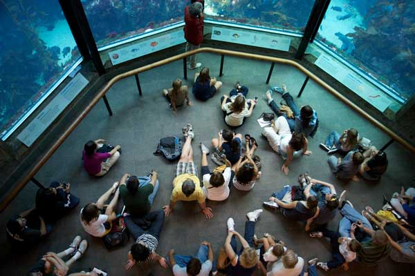Audience. Marcin Wichary, CC BY 2.0
Content (text, iconography, etc.) and interaction should be targeted at the lowest common denominator. Define terms, write in plain language. Don't assume GIS proficiency; offer more than one way to access information.
Know What’s Important

If you're making a story map to share photos from a trip ensure the size of the photos is relative to their importance. It doesn't make sense to have a full screen map with tiny thumbnail images.
User Experience
User experience (UX) focuses on having a deep understanding of users, what they need, what they value, their abilities, and also their limitations. —usability.gov
If you truly understand what your users want you can focus your energy into how to make it easy.
It better be Easy

If your users can't find the information they came for quickly they'll leave your site to get back to browsing memes and cat videos.
Fodder for Great Story Maps
Recovery!

Puerto rican parrot, Tom MacKenzie, USFWS
- Engaging photos of trust species
- Recovery plans explain the why and the how
- Recovery actions occur in a place
Migrations!
Explain the interesting life stages and/or migration of a species.
Monarch caterpillar, The Epiphany School of Global Studies, public domain
Monarch butterflies back, Sandy/Chuck Harris, CC BY-NC 2.0
Project Accomplishments
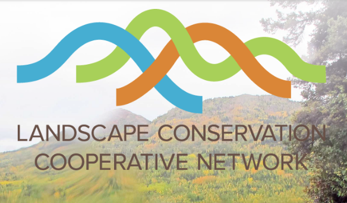- Let your users explore and filter a list of related projects
- Explain how individual projects contribute to the Landscape Scale
Different Tools and Methods
- Pre-built templates with point and click interface
- Customize upon open source templates
- Code your story maps from scratch

Pre-built Templates
ESRI provides a series of pre-built templates that you can fill with your own content

- Pro: Very easy to get started
- Cons: Branding? Integration with fws.gov?
Open Source Templates

ESRI provides a growing list of open source templates on their GitHub page. This option allows you to dive into the code to change anything and everything.
Coding your Maps from Scratch

Highest level of difficulty, but limitless options for creativity. In the Southeast your External Affairs digital team is here to help!
Techniques that Rely on Mapping
Geolocation API
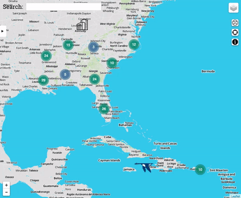Get the user's location with the Geolocation API in HTML 5 (with user's permission)
Filter a list using a map

Filter large datasets with pan/zoom

Zoom to a Location
Give a sense of distance and direction

don't over do it!
Autocomplete Text Input

The text box, then, featured prominently and with auto-complete, is a life-raft of familiarity.
Brian Timoney, Why Map Portals Don't Work Part I
Thumbnail Gallery

Preview the content before you click?
Simplify Data Entry
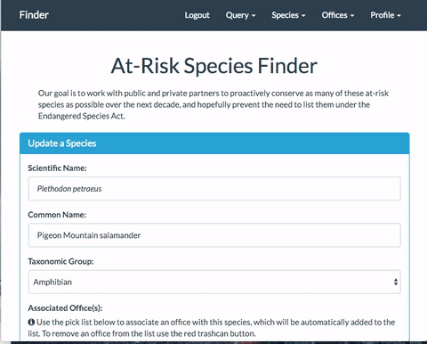Avoid misspellings and formatting errors; use a map to add/remove states from a list.
Clip and Ship
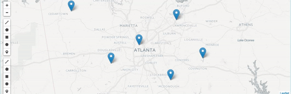Allow user to identify AOI, download data.
Poor UX
What not to do.
Zoom Zoom
Having scroll-to-zoom enabled on a scroll driven page
 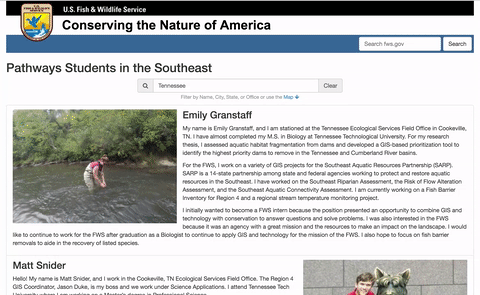
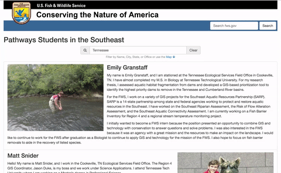
Small click targets

Hover
How do you hover with your finger?

Reinventing GIS in the Browser
 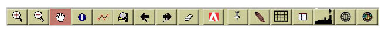
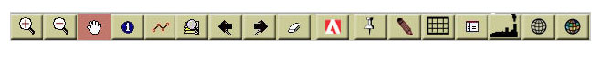
An Iconography of Confusion: Why Map Portals Don't Work, Part IV, Brian Timoney
Always show a Loading state

If the user clicks a button and doesn't have any indication that something is happening they tend to continue to mash said button.
Challenges
Can't Ignore Mobile
According to SimilarWeb’s State of Mobile Web US 2015 report, roughly 56 percent of consumer traffic to the leading US websites is now from mobile devices.

{kind=link}
Responsive Web Design
Adapting web content based on the available screen real estate for phones, wide screens and everything in between through fluid layouts.

Accessibility
How do non-sighted, motor impaired users navigate?
Another great reason to give your users more than one way to access your page's information.
Australian Paralympic Committee CC BY-SA 3.0
Performance
Forget the kitchen sink. 1 out of 4 customers will abandon a webpage that takes more than 4 seconds to load. - emarketer

Examples!
California Condor

California Condor example of ESRI Template by Jon Myatt
Cooperative Recovery Initiative!
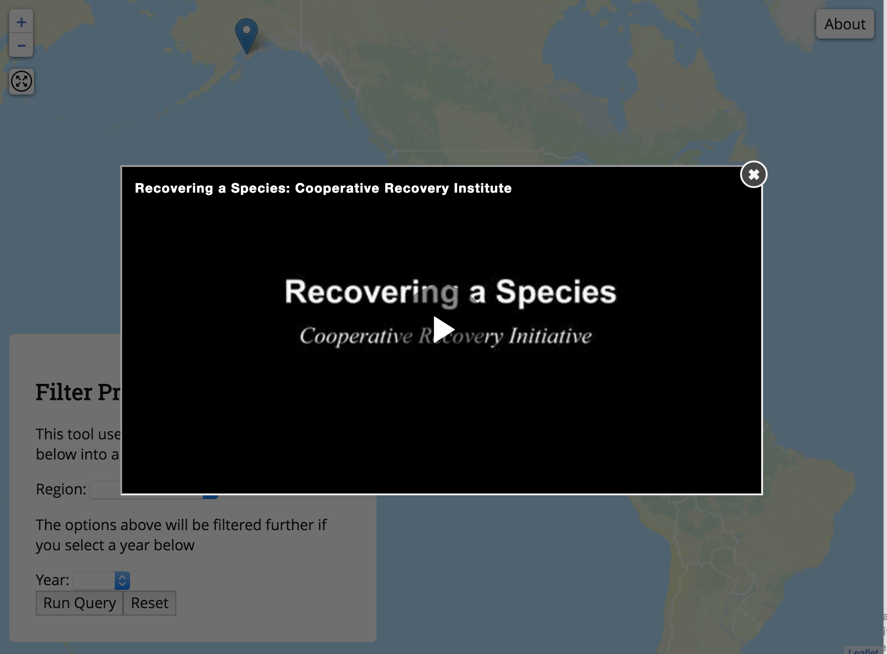The CRI Story Map lets the user explore/filter projects funded by the internal grant program. Work in Progress!
Southeast Region Mega Map
Mega map is a one-stop shop for finding USFWS offices in the Southeast Region. This is a work in progress, which will be included in the redesigned regional site.
Rio Loco/Guanica Bay
The Rio Loco/Guanica Bay Watershed Partnership Initiative lets the user explore several restoration efforts, the partners involved and their monetary contributions.
Southeast Conservation Adaptation Strategy (SECAS)
The SECAS Story Map lets the user explore conservation projects related to the strategy
Visitor Services Locations

Roy’s Career
Follow along each step in Roy’ career with the Service.
Resources!
You don't have to do everything on your own.
Southeast Region Digital Team!
Pitch us your story!
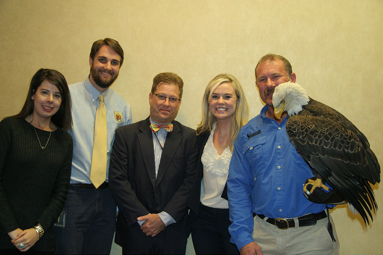Digital team with Challenger the Bald eagle, Kevin Lowory, USFWS
- Roy Hewitt: Web Development
- Katherine Taylor: Social Media
- Jennifer Strickland: Content Strategy